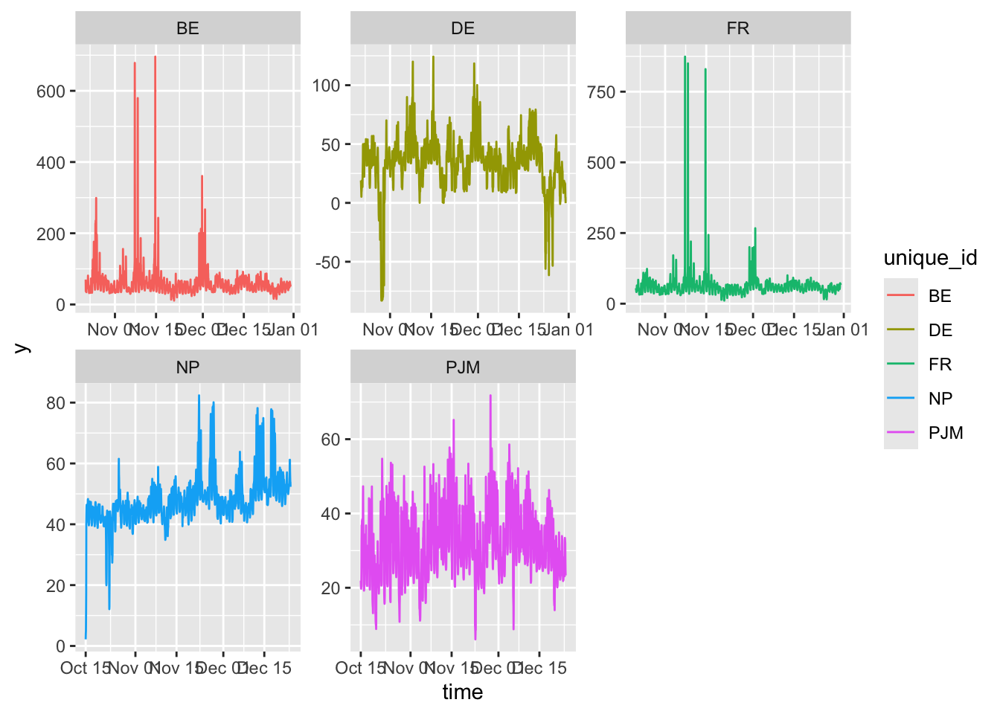
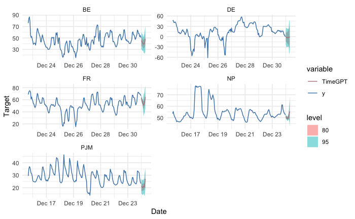
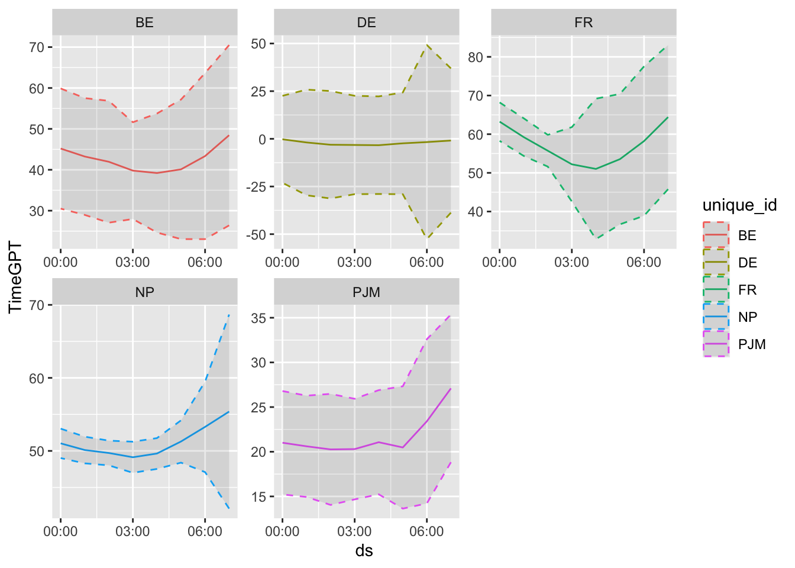
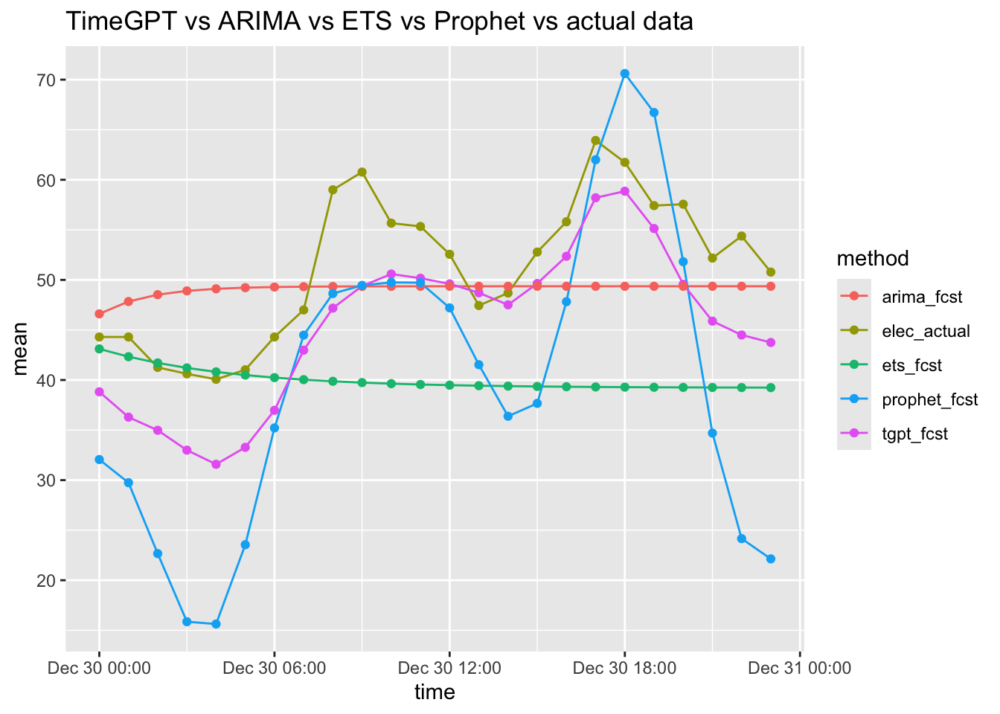

library(tidyverse)
library(forecast)
library(xts)
library(prophet)
library(nixtlar)A First Look at TimeGPT
This post is a first look at Nixtla’s TimeGPT generative, pre-trained transformer for time series forecasting.
According to Garza et al. (2021), TimeGPT is a Transformer-based time series model with self-attention mechanisms. The architecture comprises an encoder-decoder structure with multiple layers, each with residual connections and layer normalization. The encoder, a stack of multi-head self-attention layers followed by a feed-forward neural network, processes the input time series. The decoder, which is similar to the encoder, generates the forecast. The decoder includes an additional multi-head attention layer that takes the encoder’s output as input. The model is trained using a teacher-forcing strategy, where the decoder receives the ground-truth values during training. The model is then used for forecasting by feeding the model’s predictions back as input during inference.

Nixtla’s website provides a considerable amount of explanatory material, documentation, and code examples in Python. The nixlar package wraps the Python code to provide an R interface. The package documentation for version 0.6.2 doesn’t fully the R functions, but the vignettes provide sufficient code examples to get started.
Before getting started with TimeGPT you will have to register for an API key. The process is easy enough and is described in this vignette.
# saveRDS(nixtla_fcst, "nixtla_fcst.rds")
nixtla_fcst <- readRDS("nixtla_fcst.rds")
# saveRDS(nixtla_hist_fcst, "nixtla_hist_fcst.rds")
nixt_hist_fcst <- readRDS("nixtla_hist_fcst.rds")
# saveRDS(nixtla_client_fcst, "nixtla_client_fcst.rds")
nixtla_client_fcst <- readRDS("nixtla_client_fcst.rds")The Data
We will use the electricity dataset provided with the nixtlar package that contains a total of 61,320 observations of hourly electricity consumption generated from 2012 to 2018 for five different markets New York markets. So there are five different time series. You can see that the various time series do not cover the same time periods.
df <- nixtlar::electricity
df_wide <- df |>
pivot_wider(names_from = unique_id, values_from = y)
head(df_wide)# A tibble: 6 × 6
ds BE DE FR NP PJM
<chr> <dbl> <dbl> <dbl> <dbl> <dbl>
1 2016-10-22 00:00:00 70 NA 54.7 NA NA
2 2016-10-22 01:00:00 37.1 NA 51.2 NA NA
3 2016-10-22 02:00:00 37.1 NA 48.9 NA NA
4 2016-10-22 03:00:00 44.8 NA 45.9 NA NA
5 2016-10-22 04:00:00 37.1 NA 41.2 NA NA
6 2016-10-22 05:00:00 35.6 NA 41.4 NA NAA plot will give you a good feel for the data.
df2 <- df |> mutate( time = as.POSIXct(ds, format = "%Y-%m-%d %H:%M:%S")) |>
group_by(unique_id)
p <- df2 |> ggplot(aes(x = time, y = y, color = unique_id)) +
geom_line() + facet_wrap(~unique_id, scales = "free")
p
Forecasting
We will start out by showing off the nixtlar forecasting function which can handle multiple time series by forecasting eight hours ahead using all of the data. The parameter h specifies the number of steps ahead to forecast, and level specifies parameter that the confidence level for the forecast.
Here is the built-in nixtlar plot function

And here we focuse on the forecasts using ggplot2.
# nixtla_client_fcst <- nixtla_client_forecast(df, h = 8, level = c(80,95))
ncf_df <- nixtla_client_fcst |> mutate( time = as.POSIXct(ds, format = "%Y-%m-%d %H:%M:%S")) |> group_by(unique_id)
names(ncf_df) <- c("unique_id", "ds", "TimeGPT", "lon", "loe", "hie", "hin")
pf <- ncf_df |> ggplot(aes(x = ds, y = TimeGPT, color = unique_id)) +
geom_line() +
geom_ribbon(aes(ymin=lon, ymax=hin), linetype=2, alpha=0.1) +
facet_wrap(~unique_id, scales = "free")
pf
For the rest of this post we will work only with the BE data and do some simple back testing. We will split the data into training set and a test set containing 24 hours worth of observations. We will then fit several time series forecasting models and compare how well they do vis a vis the actual data and with each other.
NF <- 24
BE_df_wide <- df |> pivot_wider(names_from = unique_id, values_from = y) |>
select(ds,BE) |> drop_na()
BE_train_df <- BE_df_wide %>% filter(row_number() <= n()-NF)
BE_test_df <- tail(BE_df_wide,NF)
BE_train_df <- BE_train_df |> rename(y = BE) |> mutate(unique_id = "BE")
BE_test_df <- BE_test_df |> rename(y = BE)We start of with the TemeGPT forecast.
#nixtla_fcst <- nixtla_client_forecast(BE_train_df, h = NF, level = 95)
names(nixtla_fcst) <- c("unique_id", "ds", "TimeGPT", "lo95", "up95")Create the data frame to hold the actual and forecast values
fcst_df <- tail(nixtla_fcst,NF) |> select(ds,TimeGPT) |>
rename(time = ds, tgpt_fcst = TimeGPT) |>
mutate(elec_actual = BE_test_df$y)
head(fcst_df) time tgpt_fcst elec_actual
1 2016-12-30 00:00:00 38.82010 44.30
2 2016-12-30 01:00:00 36.29234 44.30
3 2016-12-30 02:00:00 34.97838 41.26
4 2016-12-30 03:00:00 32.99565 40.62
5 2016-12-30 04:00:00 31.58322 40.07
6 2016-12-30 05:00:00 33.27422 41.02ARIMA Forecast with auto.arima()
arima_train <- BE_train_df |> select(-unique_id) |>
mutate( time = as.POSIXct(ds, format = "%Y-%m-%d %H:%M:%S"))
arima_train <- arima_train |> select(-ds)
elec_ts <- as.xts(arima_train)
arima_fcst <- elec_ts |>
auto.arima() |>
# number of periods to forecast
forecast(h =NF , level = 95)Exponential smoothing forecast with ets()
ets_fcst <- elec_ts |>
ets() |>
# number of periods to forecast
forecast(h = NF)prophet_fit <- prophet(BE_train_df)
future <- make_future_dataframe(prophet_fit, periods = NF, freq = 3600, include_history = FALSE)
prophet_fcst <- predict(prophet_fit, future)fcst_df2 <- fcst_df |>
mutate(arima_fcst = as.vector(arima_fcst$mean),
ets_fcst = as.vector(ets_fcst$mean),
prophet_fcst = prophet_fcst$yhat)
head(fcst_df2) time tgpt_fcst elec_actual arima_fcst ets_fcst prophet_fcst
1 2016-12-30 00:00:00 38.82010 44.30 46.60606 43.10791 32.05748
2 2016-12-30 01:00:00 36.29234 44.30 47.83980 42.33006 29.74375
3 2016-12-30 02:00:00 34.97838 41.26 48.52490 41.70778 22.66588
4 2016-12-30 03:00:00 32.99565 40.62 48.90180 41.20996 15.85864
5 2016-12-30 04:00:00 31.58322 40.07 49.10927 40.81171 15.62841
6 2016-12-30 05:00:00 33.27422 41.02 49.22347 40.49310 23.54824fcst_dft2_long <- fcst_df2 %>%
pivot_longer(!time, names_to = "method", values_to = "mean")
q <- fcst_dft2_long |> ggplot(aes(x = time, y = mean, group = method, color = method)) +
geom_line() +
geom_point() +
ggtitle("TimeGPT vs ARIMA vs ETS vs Prophet vs actual data")
q